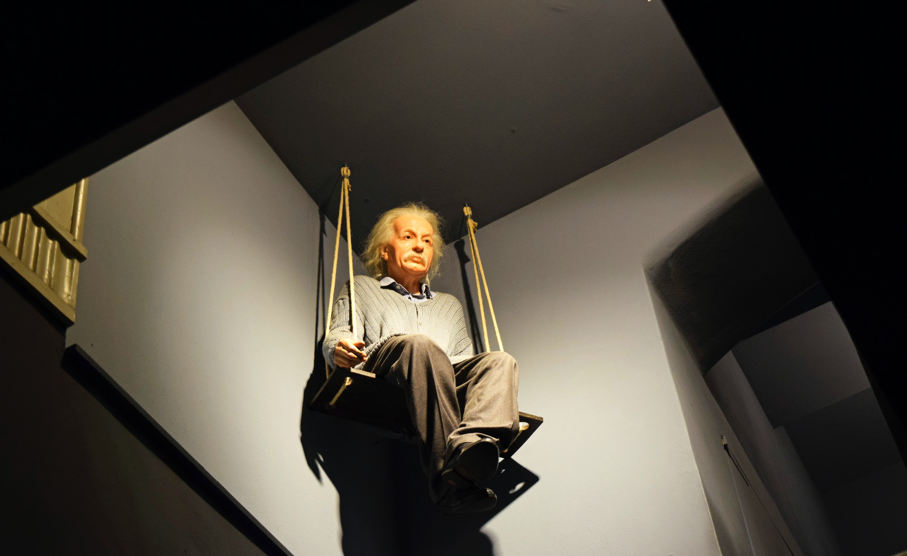

어제와 똑같이 살면서 다른 미래를 바라는 것은 정신병 초기 증세다.
알베르트 아인슈타인은 독일제국 울름에서 전기 회사 사장이었던 유대인 아버지와 독일인 어머니 사이에서 1남 1녀 중 장남으로 태어났으며, 두 살 아래인 여동생 마야(Maja)가 있었다. 그의 아버지 헤르만 아인슈타인과 어머니 파브리네는 매주 가톨릭 성당에 나가는 로마 가톨릭 신자였으며, 집안에도 청동으로 만든 십자고상이 있었다. 한 살 때 아버지와 숙부의 전기 회사 설립으로 대대로 살던 울름을 떠나, 뮌헨으로 이사했다.[3] 초등학교 시절 아인슈타인은 유럽인들의 뿌리 깊은 반유대주의로 인해 상처를 받기도 했다. 계몽사에서 펴낸 백과사전 전집인 계몽사 학생대백과사전 과학의 역사에 따르면, 아인슈타인이 다닌 초등학교는 로마 가톨릭 학교였는데, 교사가 수업 시간에 대못을 보여 주며, "유대인은 예수를 죽인 민족"이라고 말했던 것이다.[4] 반유대주의는 유대인 아인슈타인이 존경 받는 과학자가 된 후에도 그를 괴롭혔다. 학생대백과사전에 따르면, 초등학교 시절은 불평등한 현실에 눈이 뜨는 기간이기도 했다. 그가 다니던 학교는 가난한 학생들이 남아서 청소하고, 부잣집 학생들은 청소하지 않았던 것이다.
그는 어려서부터 백부와 숙부의 영향으로 일찍이 수학과 과학에 관심을 갖게 되었다. 아인슈타인의 과학과 수학 성적은 매우 좋았으나 학교에서는 대체로 군대식 전체주의 교육에 대한 저항의식으로 반항적인 학생이라 여겨졌다. 1894년에는 부친의 사업부진으로 가족 전체가 이탈리아 밀라노로 건너가게 된다. 그는 이후 홀로 독일의 김나지움에 진학했으나, 학생의 개성을 무시하는 군대식 학교생활에 잘 적응하지 못하였다. 결국 신경쇠약으로 공부를 쉬어야 할 정도로 건강이 나빠지자, 17세의 아인슈타인은 "다시는 독일 땅을 밟지 않겠다."라며 학교를 떠났다.[4] 이후 독학으로 공부하여 취리히 연방 공과대학교(ETH Zürich)에 응시하였으나 낙방하게 된다. 그러나 그의 뛰어난 수학 성적을 눈여겨본 학장의 배려로 1년간 아라우에 있는 자유로운 분위기의 고등학교에서 공부하고 나서 결국 연방 공과대학교에 입학하게 된다. 계몽사에서 펴낸 계몽사 그림위인전기 아인슈타인에 따르면, 학장이 부르더니 1년동안 아라우 고등학교에서 공부하고 오면 대학교에서 공부할 수 있도록 배려했다. 학생들의 개성을 존중하지 않는 독일의 전체주의 교육 탓에 고등학교 교육에 지쳐있던 아인슈타인에게 1년은 자유롭고 행복한 시기였다.